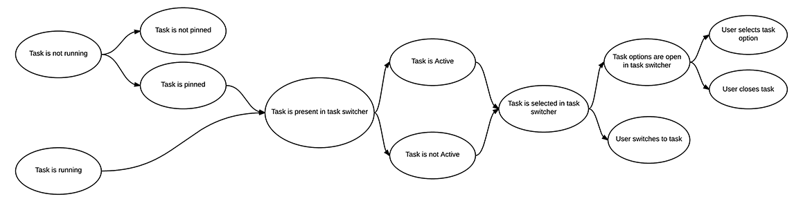
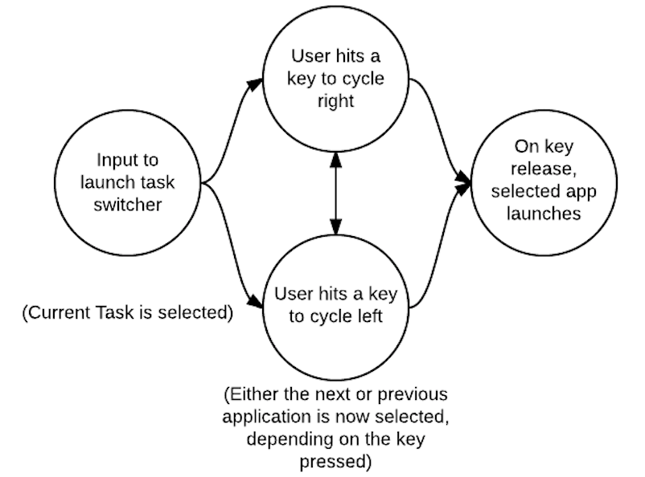
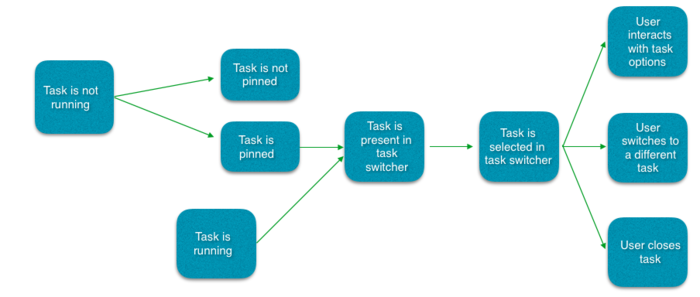
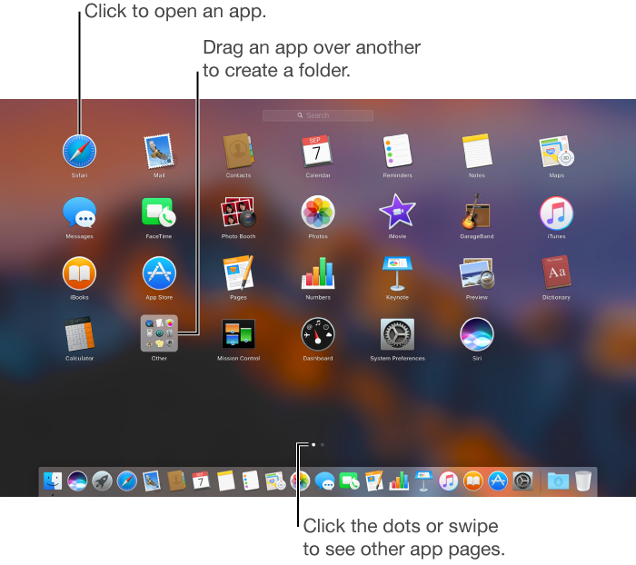
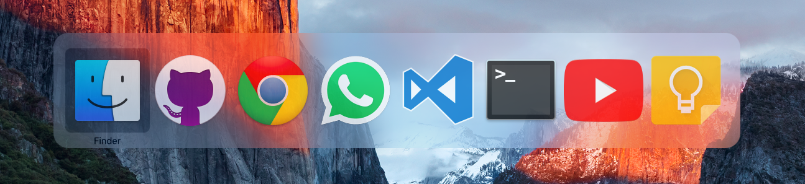

Typical Appearance & Behavior
The task switcher can come in many forms, and is very dependent on the system, but there are three main appearances which exist on modern desktop OS’s . The first, and most important, is the task bar, or tray. This is a list of pictures of each application, which is always on the bottom or side or the screen. Each picture can be clicked on to toggle that task being opened or hidden, and often users can alternate click on the tasks to open up a menu with additional options, including ending tasks. The second common appearance is a hotkey which opens a temporary window showing all the open tasks. The specifics of this vary by system, but the hotkey is often good for switching between two Windows, or other tasks using the keyboard only and not the mouse. Most systems also have a third window which gives more technical information on tasks. This is called Task Manager on Windows and Activity Monitor on Mac. This window can usually be opened with a keyboard shortcut and gives performance and resource usage information on individual tasks. Tasks can be terminated from this window, including tasks which are not responding and cannot be closed normally.
Events
Task switcher events are fairly simple. The task switcher is either onscreen or offscreen.
And there is usually a hover
event when each task is selected, followed by a select even when the task is selected. Then, of course,
there is a task switch event when switching to the new task. There is also possibly the appearance of an
options menu event from an alternative click and a preview event from a long hover.
Variants
These three versions are especially apparent on modern versions of Mac and Windows. Ubuntu has adopted a similar taskbar and “system monitor”. Also Mac OS has a desktop switcher which can switch between multiple virtual populated desktops, instead of individual tasks. Also it is important to mention that task switchers on mobile OS’s are very different for each platform, and do not look the same as on desktops. The taskbar and task manager have been around a very long time and are on most previous versions of Windows and OSX. Hotkey task switching behavior is a more recent development.
Component in Action
Priority Metrics
The taskbar is the most used method to switch tasks, and it is very easy to learn. The user simply needs to click on the picture of the task they wish to switch to, though it is a little less obvious that using an alternate click on any given task will open more options. The task switcher hotkey is more difficult to learn. Firstly, the user may not even know that this method exists, and if he/she does, must first discover the hotkey. Even then it takes a bit to get used to the single button control, and the user will likely take a few tries to switch the wanted task. The task manager is a bit more complicated as it shows more detailed statistics and information which the user may not understand. There is also the same issue of finding how to get to the task switcher in the first place. However, the most common use of the task manager, force ending a task, is fairly easy to learn, as there is usually an obvious button. Learnability is important, but assuming a user will be using any given OS multiple times, learnability is only an issue at the outset and is not as important as efficiency, which will always be a concern.
All three versions of task switchers should be very efficient. There are little to no intermediate states between the user and his/her goal. That being said, each of the three versions is more efficient for different things. The task bar is the generally most efficient as it is always on screen (if not auto-hidden) and shows all tasks in one view. The hotkey is most efficient for switching back and forth between two tasks, and is also the best solution to switching out of a fullscreen application, where the taskbar is hidden. The task manager is not very efficient at switching tasks, neither is it the most efficient at closing tasks, because it takes time to come up and navigate to the wanted task, however it is the most powerful, and must be used when the other methods are not working. Because the task switcher is so often used, efficiency is the most important metric.
The taskbar should have few errors as it is fairly simple. However, users could often accidentally open a pinned task by misclicking, or accidentally close or switch away from a task they want open. The hot key has the error or hitting the key too many or few times, and therefore switching to the wrong task. The task manager takes more effort to open and I cannot think of any regularly occurring errors. Errors are definitely a concern for any given task switcher, each common error is a decrease in overall productivity.
All three versions of the task switcher should be easy to remember. They are all fairly simple mechanisms, and they always function the same no matter what or how many tasks are open. There should be no issue with memorability. I cannot think of any non-deterministic task switcher which would be particularly difficult to remember, as long as it is not overcomplicated, this should not be an issue.
If any usability metric is least important for a task switcher, it is probably satisfaction. The action of switching a task speaks for itself and there is little need for feedback other than to do its job quickly and efficiently. If the other metrics are satisfied for any given task switcher, satisfaction will follow.
Key Characteristics
I think the important characteristics for a task switcher are illuminated by the above overview of usability metrics. A good task switcher should be firstly efficient. The user should be able to switch to any given task with as few clicks as possible, and the switching action should be quick, avoiding unnecessary transitions or animations. It should also be unobtrusive, reasonably easy to learn, certainly easy to use, and should work the same no matter how many, or what type of, tasks are active.
A good task switcher should be easily accessible from any screen or program, and should be able to move between any needed task or kill a task without having to stop and think about what they're doing. common features include a representation of the icons and/or previews of the various tasks and a button to end them. Also optionally multiple instances of the same task could be embedded or overlayed and some information or metrics can be shown on various tasks.
State Diagram
Task switcher states depend on the functionality of the switcher, but as a general overview we can say that there a few different states. Task not-running, Task running & active, Task running & non-active, and Task selected in task switcher, Task options panel selected in task switcher. It is important to note that, in the taskbar or tray, tasks which are not currently running can still be pinned, and selected, opened, or shown options.
Platform-Specific Instances
The three versions of the task switcher that I have mentioned are present on Windows 8.1. There is also a “Switch list” feature as part of Windows 8’s “Hot Corners” but I will not be covering that as it is horrible and I have it disabled. I will cover the other three in specific detail.
The taskbar is pretty standard; apps can be pinned for quick access, and can be opened, closed and switched at ease. Hovering over an app opens a live preview of it above the taskbar. Hovering over the preview brings up a full size preview of the window or app. Apps have an options menu accessed by right clicking on them and the taskbar itself also has its own options menu accessed by right clicking on a blank spot. There is also the Windows logo in the corner which opens the start menu, and on the other side of the task bar is a clock with the date, and also a notification area, where system settings, such as wifi, sound levels, and power settings, can be accessed along with hidden apps such as graphics settings, and apps which do not appear on the main taskbar, but are docked, and still running.
The Microsoft windows dev guidelines state "The taskbar is the access point for programs displayed on the desktop. With the new Windows 7 taskbar features, users can give commands, access resources, and view program status directly from the taskbar. The taskbar is the access point for programs displayed on the desktop, even if the program is minimized. Such programs are said to have desktop presence. With the taskbar, users can view the open primary windows and certain secondary windows on the desktop and can quickly switch between them."

The hotkey in Windows 8.1 is alt+tab. This opens a temporary interface where lives preview screens of the apps are visible including window titles. Pressing alt+tab once will switch back and forth between the most recent opened app. Apps can be cycled through by each press of tab while holding alt, if held on one app, the the window will open in a full scale preview. Once the user lets go of alt, the selected app is switched to.

The task manager in Windows 8.1 can be accessed by selecting it from a menu accessed through the hotkey ctrl+alt+del. It can also be accessed through a menu option by right clicking on the taskbar. Although it was available in previous versions of Windows, task switching is not a main function of the task manager in Windows 8.1. It is primarily for ending tasks and obtaining application and system performance information.

Credits
Written by Flanders Lorton 2015. Embedded video is original content.
A Task Switcher allows for quick and efficient switching between open programs for a streamlined workflow. There are a plethora of different ways to accomplish this, ranging from quick keyboard shortcuts, to using the command line.
Typical Appearance
Although there are many ways to switch between tasks, most operating systems have a similar feature that portrays all currently open programs (or their respective icons) in thumbnails across the screen. They typically prioritize the screen, displaying themselves in front of any and all open windows. Please click here to see examples on different operating systems.
Example of a desktop task switcher (Windows 10)

Example of a mobile task switcher (iOS 9)
Typical Behavior
First, it is important to note that there is a long list of ways a user can switch between tasks. One way would be to use the mouse, locate the task launcher, hover over the task one wants to open, and click. Information on the task launcher can be found here.
Another more efficient way, which is seen on most Operating Systems, including mobile, is to press and hold a set of keys (i.e. Windows: Alt + Tab ; OSX: Cmd + Tab ; iOS 9 double tap the Home button). While still holding the Cmd or Alt key, the user can keep tapping on Tab to quickly sift through currently open programs. Once the user lets go of all keys, the program that was selected will open.
It is good to note that this is a very efficient way to jump back and forth between two programs. The end goal is to switch between tasks, and the quicker and more effortless the process is, the better it is for the user. There are many different shortcuts, and other platform-specific ways to allow for further efficient manipulation (i.e. hiding an app) that will be mentioned under the Platform-Specific Instances section.
Events
The most relevant task launcher event is to select the new open app and switch to it. Because of the simplicity of the action, there should not be a myriad of alternative actions. If a user hovers over a task, it simply becomes selected, and the previous task becomes unselected. Only one task can be selected at a time.
State Diagram

Note that only one task can be selected at a time, so when one task is selected all the others are not. A task must be selected in order fo it to be launched, which occurs on key release or it's platform-specific way of selection. However, if the task switcher is active on the screen, a user can always interact with each task, and they are never disabled if the task launcher is open. Please see Platform-Specific Instances for more states.
Typical Behavior (continued)
Component in Action
Below is a video showing off the task switcher in OSX. The taskbar pops up, taking priority of the screen, and the user can navigate to the left or to the right, quit tasks, hide them, or quickly "alt/tab" back and forth between a pair of tasks.
Variants
Switching tasks is a standard operation on most devices. Below is a list illustrating the broad ways to accomplish task switching:
- Mission Control , an OSX variant, displays all open windows in thumbnail view across the screen. The difference is that there are no shortcuts to navigate between currently open windows, and you get a preview of the conent of each open task, rather than just the task icon. They are not aligned neatly across the middle of the screen, but scattered. A user can click on any task to switch to it. More information can be found in Platform-Specific Instances.
- Most smartphones have a task switcher. When launched, gesture-based controls allows the user to cycle through all open apps, and when they find the one they want to open, they tap on it to open it.
- Using Voice Navigation (i.e. Siri) and vocally ask to "open" a specific task.
Priority Metrics
The learnability of task switching should be very quick, as it is a single input (whether it is a gesture, a double tap of a button, or several key entries at once). It may take longer to discover all the features in a task switcher, like hiding or quitting applications, but it's main function of switching tasks should be intuitive. Once the task switcher is active, there should be no confusion and no series of extra steps to accompish switching to a different task.
Efficiency is arguably the most important usability measure, as there should be no delay after launch. Because efficiency is of such high priority, there should be almost no mistakes (errors) from a user to accidentally open the wrong program, as the program selected should be the only one that is switched to.
Memorability would be the biggest hurdle, as user needs to memorize the input to launch it. Once that one input is memorized, there should not be any confusion on what to do next.
Satisfaction is of high priority, and is closely tied to efficiency. The user should feel that switching tasks is effortless, and feel a sense of "flow" as they are hopping between tasks.
Key Characteristics
This section is for describing “what makes for a good your component here?” Most likely, this is an amalgam of guidelines documents and platform-independent interaction design principles.
Feedback
Perhaps the most important interaction design principle that a task launcher must follow is feedback. Users must never doubt whether:
- a current task is highlighted, and ready to be opened on key release.
- all other tasks are clearly not selected, so as there is no confusion as to which task will be opened.
Simplicity
Simplicity is a key guideline to implement properly. Upon the task switcher's launch, the user should have no trouble distinguishing which tasks are open, which task is currently selected, what the next selected task would be, and how to open the next selected task.
Platform-Specific Instances
Below are some examples of platform-specific instances.

Ubuntu 11 Task Switcher

Windows 8 Task Switcher

Windows 7 Task Switcher

KDE 4.1 Task Switcher

OS X Mountain Lion Task Switcher
Below are the sections of platform-specific instances.
OSX El Capitan
There are two main ways a user can use task switching in OSX.
Standard Task SwitchingThe user presses and holds the CMD button, and taps on Tab. The task switcher pops up, taking screen priority, showing all currently open apps with the current app being highlighted:

Note that the app that is highlighted is the only one that has text under it, and has a light grey box that encompasses the icon
The user now has multiple options and can
- Release the keys to switch to the currently open app.
- Cycle through the currently open apps:
- to the right by using either
Tabor theRight Arrowkey. - to the left by using either
Tab + Shiftor theLeft Arrowkey or the`key. - Enter Expose Mode by hitting either the
UporDownarrow key. - Hide the application by hitting the
Hkey. - Quit the application by hitting the
Qkey.
Although there are many shortcuts to accomplish multiple tasks, for the sake of simply "task switching" only the first three bullet points are relevant. For the sake of completeness, if the user decided to cycle right, the new state would be

blabla
Mission Control Task Switching
The user either presses the mission control key  , enters
, enters Control + Up keys, enables swiping gestures (ie four finger swipe up across the trackpad), or presses the up or down arrow keys when the standardk task switcher is active, and launches Mission Control and is greeted with the following view:

Although there are many neat features in Mission control that have to do with using OSX Spaces , regarding the act of task switching, they are irrelevant as it is more for window management. What is to note is the differences between the two interfaces. Mission Control displays thumbnails where a user can see what is going on inside each and every single app. They are spread across in no particular order, and none of them are highlighted until a user mouses over an app. When a user mouses over an app, a label appears with the app name. A stark contrast to the thin, simple standard task manager that only shows icons and a single selected app.
Credits & References
Juell, Thor. "Viewing Your Windows Programs without Seeing Windows." VMware Fusion Blog. VMWare, 10 Nov. 2011. Web. 23 Oct. 2015.
Barton, Seth. "How to Switch Tasks Faster in Windows 10." Expert Reviews. N.p., 25 July 2015. Web. 23 Oct. 2015.
"IOS 9's Redesigned Task Switcher." YouTube, 16 June 2015. Web. 23 Oct. 2015.
OSXDaily. "Secrets of the Command-Tab Mac Application Switcher | OSXDaily." OS X Daily Secrets of the CommandTab Mac Application Switcher. OSXDAILY, 17 Nov. 2009. Web. 23 Oct. 2015.
Apple. "Apple." Use Mission Control on Your Mac. Apple, n.d. Web. 23 Oct. 2015.
The Task Switcher is a vital component for increasing productivity in an operating system, and allows the user to switch between different applications.
Typical Appearance & Behavior
The task switcher can come in many forms, and is very dependent on the system, but there are three main appearances which exist on modern desktop operating systems. The first, and most popular, is the task bar. This contains a set of icons that represent each application, and is located on either the bottom or side of the screen. Each icon can be left-clicked on to toggle that task being opened or minimized, and users can also right-click on the tasks to access a menu with additional options, including quiting tasks. The second common appearance is a hotkey or trackpad gesture which opens a temporary screen showing all the open tasks. The specifics of this vary by system, but the hotkey is often good for switching between full screen tasks quickly, since it doesn't require and window minimization. Operating systems systems also have a third task switcher which gives more technical information on tasks. This is called Task Manager on Windows and Activity Monitor on Mac. This window can usually be opened with a keyboard shortcut and gives performance and resource usage information on individual tasks. Tasks can be terminated from this window, including tasks which are not responding and cannot be closed normally.


Events
Task switcher events are fairly simple. The task switcher is either onscreen or offscreen. And there is usually a hover event when each task is selected, followed by a select even when the task is selected. Then, of course, there is a task switch event when switching to the new task. There is also possibly the appearance of an options menu event from an alternative click and a preview event from a long hover.
Component in Action
Variants
Taskbars, hotkeys, and task managers are especially apparent on modern versions of Mac, Ubuntu, and Windows. Also Mac OS has a desktop switcher which can switch between multiple virtual populated desktops, instead of individual tasks. Also it is important to mention that task switchers on mobile OS’s are very different for each platform, and do not look the same as on desktops. The taskbar and task manager have been around a very long time and are on most previous versions of Windows and OSX. Hotkey task switching behavior is a more recent development.
Priority Metrics
Efficiency is arguably the most important usability measure, as there should be no delay after the task is selected. Because efficiency is of such high priority, there should be almost no errors from a user to accidentally open the wrong program, as the program selected should be the only one that is affected. That being said, all of the task switchers vary in efficiency depending on the task. The taskbar is generally most efficient as it is accessible on any screen and shows all active tasks in one view. The hotkey is most efficient for switching back and forth between multiple tasks, and is also the best solution to switching between fullscreen applications. The task manager is not very efficient at switching tasks, neither is it the most efficient at closing tasks, because it takes time to come up and navigate to the wanted task, however it is the most powerful, and must be used when the other methods are not working.
Satisfaction is also of high priority, and is closely tied to efficiency. The user should feel that switching tasks is effortless, and feel a sense of fluidity as they are switching between tasks.
Learnability of task switching is an important metric for a task switcher and should be very quick. It may take longer to discover all the features in a task switcher, like hiding or quitting applications, but it's main function of switching tasks should be intuitive. Once the task switcher is active, there should be no confusion and no series of extra steps to accompish switching to a different task. For example while finding the hotkey, trackpad gesture, or task manager might be harder, the action itself must be simple and inutitive. However assuming a user will be using any given OS multiple times, the difficulty of finding the different types of task switchers only affects learnability at the outset.
Memorability is one of the less important metrics because since the taskbar is always available on screen, the user only needs to memorize the hotkey or how to launch the task manager. Once that input is memorized, there should not be any confusion on what to do next. All three versions of the task switcher are fairly simple mechanisms, and they always function the same no matter what or how many tasks are open.
Errors, while important, should not be a hurdle for the task switchers as they are fairly simple. However, users could often accidentally open a pinned task on the taskbar by misclicking, or accidentally close or switch away from a task they want open. The hot key has the error of hitting the key too many or few times, and therefore switching to the wrong task. The task manager takes more effort to open, but once opened it is simply a matter of selecting the task you wish to close.
Key Characteristics
The most important characteristic for a task switcher is illuminated by the above overview of usability metrics. The most important characteristic of a good task switcher is efficiency, allowing the user to be able to switch to any given task with as few clicks as possible. The switching action should be quick as well, avoiding unnecessary transitions or animations. It should be reasonably easy to learn and use, and should work the same no matter how many tasks are active.
Another characteristic of a good task switcher is accessibility from any screen or program, and the ability to move between any needed task or quit a task. Simplicity is also a key characteristic. Upon the task switcher's launch, the user should have no trouble distinguishing which tasks are open, which task is currently selected, and how to open the next selected task.
State Diagram

Task switcher states depend on the functionality of the switcher, but as a general overview we can say that there a few different states such as task not-running, task running, and task selected. It is important to note that, in the taskbar or tray, tasks which are not currently running can still be pinned, and selected, or opened.
Platform-Specific Instances
When multiple apps and windows are open, it can be difficult for users to find the one they want. Luckily MacOS Sierra provides these platform-specific task switchers to move among apps.
-
Mission Control gives users an easy way to see all their desktops and full-screen windows, in addition to Dashboard and the Dock, at one time. In Mission Control, users can create a new desktop, switch between desktops and full-screen windows, or choose a specific window on the current desktop.
To open Mission Control the user either presses the F3 key, enters Control + Up, enables a trackpad gesture (i.e. swiping up with three or more fingers), or enables Hot Corners so when they move the pointer to the corner of the screen Mission Control is launched.

Once the user launches Mission Control they are met with the following view:
Mission Control shows all of the windows open on the desktop, arranged in a single layer so it’s easy to spot the one you need. Apps that are in full screen or Split View, and desktop spaces you created, are shown as thumbnails in the Spaces bar along the top edge of the screen.
-
Launchpad is a central location where you can see and open apps that are on your Mac. When you download an app from the App Store, it automatically appears in Launchpad. To open Launchpad, click the icon in the Dock. To close Launchpad without opening an app, click anywhere on the screen (except on an app), or press Esc.
Once the user launches Launchpad they are met with the following view:

Launchpad works especially well for opening and finding apps as well as the organization of apps, which aids efficiency when using it to switch between apps.
Users can organize apps in Launchpad by:
- Dragging the app to a new location on the page.
- Dragging the app to the edge of the screen, and releasing it when the page the user wants appears.
- Dragging one app over another to create a folder, then dragging other apps to the folder.
-
To launch the Task switcher the user presses and holds the Command button, and taps on Tab. The task switcher pops up, taking screen priority, showing all currently open apps with the current app being highlighted:

- To quickly switch to the previous app: Press Command-Tab.
- To scroll through all open apps: Press and hold the Command key, press the Tab key, press the Left or Right arrow key until the user gets to the app they want, then release the Command key.
- If the user changes their mind while scrolling through and don’t want to switch apps, they can press Esc (Escape) or the Period key, then release the Command key.
- To enter Expose Mode: Press either the Up or Down arrow key.
- To hide the selected application: Press the H key.
- To quit the selected application: Press the Q key.
Credits & References
"Apple." MacOS Sierra: Use Launchpad to View and Open Apps. N.p., n.d. Web. 27 Oct. 2016.
"Apple." MacOS Sierra: Manage Windows on the Desktop. N.p., n.d. Web. 27 Oct. 2016.
"Apple." MacOS Sierra: Manage Windows on the Desktop. N.p., n.d. Web. 27 Oct. 2016.
"MacOS Human Interface Guidelines: App Extensions." MacOS Human Interface Guidelines: App Extensions. N.p., n.d. Web. 27 Oct. 2016.
Written by Claire Ortega with some integrations from both Flanders Lorton and Victor Frolov's contributions. Embedded videos are original content.